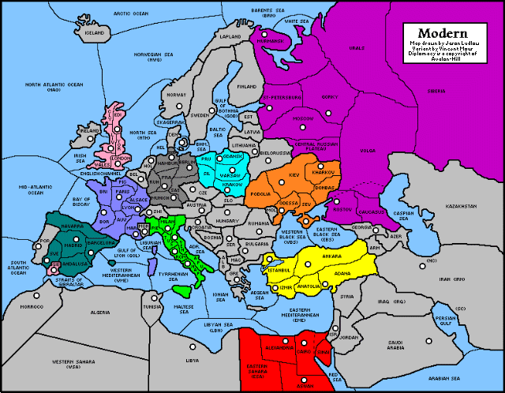

Modern Times
Vincent Mous
Brief Introduction
Modern Diplomacy is a simple Diplomacy variant set in modern day
Europe, circa 1995. The rules are the same as normal Diplomacy,
but the map is different.
History of the Modern Diplomacy Variant
Standard Diplomacy takes place at the beginning of the 20th
century. With the 20th century almost gone, I was beginning
to feel that the game was a bit outdated and the map needed revising.
This is not to say that the game wasn't challenging or fun anymore,
just that it could be interesting to play in a more current setting.
To make the game more current, a new unit type -- airplanes -- was originally
added. Planes could go over water and land but could
not capture a supply center. Therefore, if France managed to move
a plane over London, England would still own it, but not be able
to build there. As I didn't want to make major modifications to
judge code, and since the game seemed to work well without planes,
planes were soon dropped from the picture. The modern variant
as played on the judges does not use planes, though if someone
is willing to program it let me know!
Overview of the Modern Diplomacy Variant
Modern Diplomacy is a Diplomacy variant with a different map.
It takes place in Europe, the Middle East and North Africa starting
in Spring 1995. All rules are the same as normal Diplomacy except
the map.
When creating the game, I had to decide which countries to make
powers. After many attempts at drawing a map, I settled on making
any country with 30 million inhabitants a great power.
Furthermore, those with more than 60 million inhabitants were
given 4 home centers, while Russia (with 200 million plus) was
given 5. Iran would have qualified as a 4 supply center great
power, but this would have made it necessary to extend the map
into Asia, so it was simply made a neutral supply center.
Other than this, borders and neutral supply centers were distributed
to even out the game. Monaco was made a neutral SC even though
its size does not warrant it, and Gibraltar was made a British
home SC, to give Britain a port in the Mediterranean,
to give Spain more than one neighbor, and to take some pressure off
France.
Why does the variant only include Europe? I think that one of
the good aspects of regular Diplomacy is that it is confined to
the relatively small but densely populated continent of Europe.
Europe has many small but relatively powerful countries, at least
historically. The various world-spanning Diplomacy variants I
have tried suffer, in my opinion, from having too many powers
and being generally unbalanced or unwieldy.
Why has war broken out in 1995? We have to consider that for some
reason all international organizations (the EU, UN, NATO, GATT,
etc.) have all broken down. Maybe nationalist governments have
been elected in some countries in Europe, the Bosnia conflict
has spread, global warming has reduced arable land, terrorism
has erupted throughout Europe. Who knows? Likewise, the United States, China,
and other countries outside Europe are not getting involved. They
might be waging civil wars or war with each other, they may have
been victims of a natural cataclysm, a nuclear holocaust or biological
warfare, or they may simply not want to risk the lives of their
men and women. This is certainly possible; the US Senate voted
recently against sending troops to Bosnia to monitor a peace deal,
let alone a war! Whatever the reason, Europe is once again on
the brink of war.
Rules to Modern Diplomacy
Map of the Variant
The map for the Modern variant is shown below.

The (compressed) PostScript version of this map may be obtained via ftp at
ftp://ftp.ugcs.caltech.edu/pub/diplomacy/Maps/modern.ps.Z.
A bitmap version of the map is available in the pkzipped judge maps package
file obtainable via ftp at
ftp://ftp.ugcs.caltech.edu/pub/diplomacy/Maps/BMPmaps.zip
Notes on Geography
- Cairo, Hamburg and Istanbul behave as
Kiel and Constantinople did in the original game: they have no
coasts but fleets can pass through them to bodies of water of
both sides.
- There is another canal linking Rostov
and Volga, thus permitting access to the Caspian Sea to ships.
Rostov is situated along the Don River which empties into the
Black Sea, while the Volga empties into the Caspian Sea. In the
real world there is a canal at Volgograd linking the two rivers,
somewhere in the southern Volga region on the map. This is the
only way to get ships into and out of the Caspian Sea.
- Iran is the only territory with multiple
coasts in the game; the south coast touches the Arabian Sea and
the Persian Gulf, while the north coast touches the Caspian Sea.
- Where possible, the full name of a territory
was put on the map.
The following were supply centers only
abbreviated by the first three letters:
| Abbreviation | Location | | Abbreviation | Location |
|---|
| adr sea | adriatic sea | | ana | anatolia |
|---|
| apu | apulia | | auv | auvergne |
|---|
| bar | barcelona | | bel | belgium |
|---|
| bos | bosnia | | bri | brittany |
|---|
| cly | clyde | | cze | czech republic |
|---|
| edi | edinburgh | | fra | frankfurt |
|---|
| gib | gibraltar | | ham | hamburg |
|---|
| hel | heligoland bight | | hol | holland |
|---|
| isr | israel | | liv | liverpool |
|---|
| lon | london | | mac | macedonia |
|---|
| mar | marseilles | | mil | milan |
|---|
| mol | moldavia | | mon | monaco |
|---|
| mun | munich | | nap | naples |
|---|
| pic | picardy | | pie | piedmont |
|---|
| por | portugal | | pru | prussia |
|---|
| rom | rome | | sax | saxony |
|---|
| ska | skagerrak | | tus | tuscany |
|---|
| ven | venice | | wal | wales |
|---|
| yor | yorkshire | |
|---|
Abbreviations
Abbreviations for territories are the
first 3 letters of the territory, except for:
- Barents Sea is "bare" or "bars" (conflicts with Barcelona)
- Bornholm Sea is "born" or "bors" (conflicts with Bordeaux)
- Eastern Black Sea is "ebs"
- Eastern Mediterranean is "emed"
- Eastern Sahara is "esah"
- Gulf of Bothnia is "gob"
- Gulf of Lyon is "gol"
- Libyan Sea is "lbn"
- North Atlantic Ocean is "nao"
- North Sea is "nth"
- Norwegian Sea is "nwg"
- Seville is "sve" (conflicts with Sevastopol)
- Western Black sea is "wbs"
- Western Mediterranean is "wmed"
- Western Sahara is "wsah"
Alternatives are also available for
many spaces, especially water
spaces. See the map file for these alternative
abbreviations.
Great Powers
There are ten great powers in the game, ranging from three center powers
to a single five center power.
- Three center powers: Egypt (E), Poland (P), Spain (S)
- Four center powers: Britain (B), France (F), Germany (G), Italy (I),
Turkey (T), Ukraine (U)
- 5 center power: Russia (R)
Starting Positions (Spring 1995)
The starting positions for the powers are shown below:
- Britain (B): F EDI, F GIB, F LIV, F LON
- Egypt (E): F ALE, A ASW, F CAI
- France (F): F BOR, A LYO, A MAR, A PAR
- Germany (G): F BER, A FRA, F HAM, A MUN
- Italy (I): A MIL, F NAP, A ROM, F VEN
- Poland (P): F GDA, A KRA, A WAR
- Russia (R): A GOR, A MOS, A MUR, F ROS, F STP
- Spain (S): F BAR, A MAD, A SEV
- Turkey (T): A ADA, F ANK, A IST, F IZM
- Ukraine (U): A KHA, A KIE, A ODE, F SEV
Winning Conditions
There are 38 home centers and 26 neutral centers on the board, making
64 total centers. To win the game, control of 33 centers is needed.
Ongoing Games
The first game of the modern variant started on the USCA judge
(judge@ugcs.caltech.edu) in October,
1994 and was called euro94. The second game (and, at this writing, the
most advanced in gameyears) started soon thereafter on the USVA judge
(judge@intertv.com),
and was called seville,
The games which are running at the time of this writing include:
- seville, odessa, lyon, and cairo are
gunboat, no press, modern games.
- euro94 and izmir are gunboat, partial press games.
- delta is a grey, partial press game.
- liarliar and lie2me are gunboat, black press games.
Feel free to sign on as an observer to any of these games
and look at the strategy.
Creators
The variant was designed by Vincent
Mous and programmed for the judge by Vincent Mous and Nicholas
Fitzpatrick with a lot of help from Kevin Roust. The variant was
tested by those playing the many judge games, as well as some
friends of the creator.
Vincent Mous
(vim2@rocketmail.com)
If you wish to e-mail feedback on this article to the author,
and clicking on the mail address above does not work for you,
feel free to use the "Dear DP..."
mail interface.